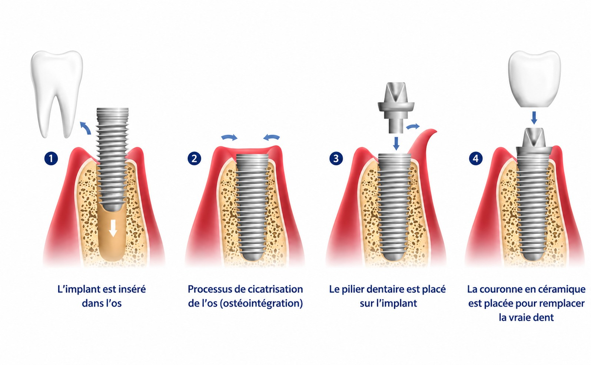

De l’extraction à l’implant : chaque étape expliquée simplement
Extraire une dent puis la remplacer par un implant est aujourd’hui un parcours bien balisé, pratiqué en routine et adapté à chaque situation. Voici, étape par étape, ce à quoi vous attendre, pour aborder ce projet en toute confiance.

Les 4 étapes de la pose d’un implant dentaire
L’avulsion dentaire, un geste simple et maîtrisé
Lorsqu’une dent est trop abîmée pour être conservée, son extraction (ou avulsion) est un acte très couramment pratiqué au cabinet, réalisé sous anesthésie locale. La grande majorité des avulsions se déroulent simplement, en quelques minutes, avec des suites légères et bien connues : elles s’estompent en quelques jours, aidées par des consignes précises données à la sortie du cabinet.
C’est aussi le moment où se prépare la suite : dès cette première consultation, le Dr Darmon évalue avec vous la meilleure stratégie de remplacement de la dent, pour que l’extraction s’inscrive dès le départ dans un projet global et serein.
Implant immédiat ou différé : deux options, toutes deux fiables
L’implant immédiat
Lorsque les conditions locales s’y prêtent (bonne qualité osseuse, absence d’infection), l’implant peut être posé le jour même de l’extraction, dans le même temps opératoire. Un avantage appréciable : moins d’interventions et un projet global plus rapide.
L’implant différé
Dans d’autres cas, il est préférable de laisser l’os et la gencive cicatriser quelques semaines à quelques mois avant de poser l’implant. Cette approche, tout aussi fiable, permet de réunir des conditions optimales pour la réussite à long terme de l’implant.
Aucune des deux options n’est en soi meilleure que l’autre : le choix se fait au cas par cas, lors de la consultation, en fonction de votre situation clinique et de vos préférences. Dans les deux cas, l’objectif reste le même : vous offrir une restauration durable et esthétique.
La préservation alvéolaire, pour garder toutes les options ouvertes
Après une extraction, l’os qui entourait la racine a naturellement tendance à se résorber légèrement au fil des semaines. Pour anticiper ce phénomène, le Dr Darmon peut proposer, au moment même de l’extraction, une préservation alvéolaire : l’alvéole est comblée par un biomatériau qui soutient l’os en cours de cicatrisation.
Ce geste simple, réalisé dans le prolongement de l’avulsion, permet de maintenir un volume osseux favorable et de garder toutes les options ouvertes pour la pose d’un implant, immédiate ou différée.
La greffe osseuse, une technique éprouvée
La pose d’un implant nécessite un certain volume d’os pour offrir un ancrage solide et durable. Lorsque ce volume est insuffisant, notamment après une perte de dent ancienne, une greffe osseuse permet de le reconstituer avant ou pendant la pose de l’implant. Au niveau des molaires supérieures, cette greffe prend souvent la forme d’un sinus lift (ou comblement de sinus), qui consiste à augmenter le volume osseux disponible sous le sinus maxillaire.
Loin d’être une exception, cette technique est aujourd’hui bien maîtrisée et largement pratiquée : elle permet à un très grand nombre de patients, qui pensaient ne plus pouvoir bénéficier d’un implant faute d’os suffisant, de retrouver cette solution durable. Le Dr Darmon vous explique, si votre situation le nécessite, la technique la mieux adaptée à votre cas.
Extraction et implant : vos questions
L’extraction d’une dent est-elle douloureuse ?
Grâce à l’anesthésie locale, la douleur pendant le geste est généralement absente ou très limitée. Dans la plupart des cas, une légère sensibilité peut apparaître les jours suivants, facilement soulagée par les conseils et, si besoin, les antalgiques prescrits au cabinet.
Peut-on poser un implant le jour même de l’extraction ?
Oui, c’est possible dans de nombreuses situations : c’est ce qu’on appelle l’implant immédiat. Le Dr Darmon évalue lors de la consultation si les conditions locales s’y prêtent, ou si une pose différée, après cicatrisation, est préférable. Les deux approches offrent d’excellents résultats.
À quoi sert la préservation alvéolaire ?
Elle consiste à combler l’alvéole après extraction pour maintenir le volume osseux disponible. Après une extraction, l’os a naturellement tendance à se résorber légèrement : ce geste, réalisé au moment même de l’extraction, préserve de bonnes conditions pour un futur implant.
Une greffe osseuse est-elle systématique avant un implant ?
Non, la plupart des implants sont posés sans greffe préalable, uniquement en cas de volume osseux insuffisant. Lorsque nécessaire, la greffe permet de reconstituer ce volume de façon fiable : c’est une technique bien maîtrisée, qui élargit considérablement le nombre de patients pouvant bénéficier d’un implant.
Une dent à remplacer ? Parlons-en sereinement.
Le Dr Darmon vous reçoit pour établir, ensemble, le parcours le mieux adapté à votre situation.